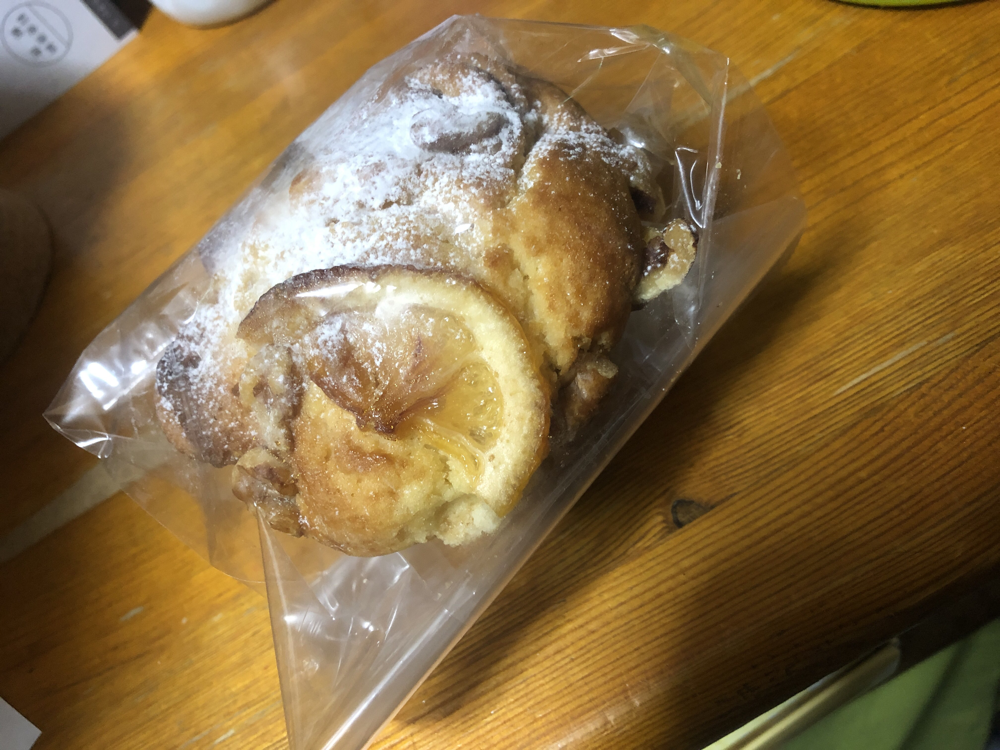

マフィンの感想
こんばんは。零阪麻琴です。毎度ご閲覧ありがとうございます。
今日はcafeLIFEisGOODさんが妙典gateさんにマフィンを売りにいらっしゃってたので買って食べてみました。
今日買ったのはこちらです。

おっと。まだ食べるわけじゃないですよ。そんな慌てないで。美味しい食べ方ってのがカードに載ってます。
レンジかトースターで温めるといいらしいので温めました。20秒です。すごいお手軽。
さあ出てきたらいい香りがしてきました。このレモンの香りが台所の雰囲気を一気にすっきりさせます。
さて、いただきます。一口目は大きなレモンがある側から。中も美味しいけど皮も美味しい。今までで一番抵抗なく柑橘系の皮を食べました。
マフィンと言うとバターのお菓子みたいなイメージをお持ちになると思いますが、そのようなイメージを軽々とふっとばす爽やかさが広がります。
そのまま二口目へ。チョコのちょうどよい苦味と甘味で一気に場が引き締まります。さらに、マフィンそのもののベースの味で方向性がバラバラにならずまとまっています。
断面からも美味しそうな香りがするのでそこを食べてみます。非常に柔らかく食べやすいです。その状態で残っていたレモンの皮を食べて再び爽快感を味わうわけで。
人生で初めて「あとマフィンを何回食べれるだろう。沢山食べると言うよりこののんびりとした時間を何度でも過ごしたい。」と思考にふけりました。おいしかったです。ごちそうさまでした
cafeLIFEisGOODさん
Twitter: @cafelifeisgood
YouTubeチャンネル：cafeLIFEisGOOD
ホームページ：https://www.lifetokyo.jp
実店舗：東京都葛飾区高砂３－２６－１２